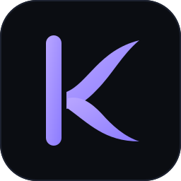
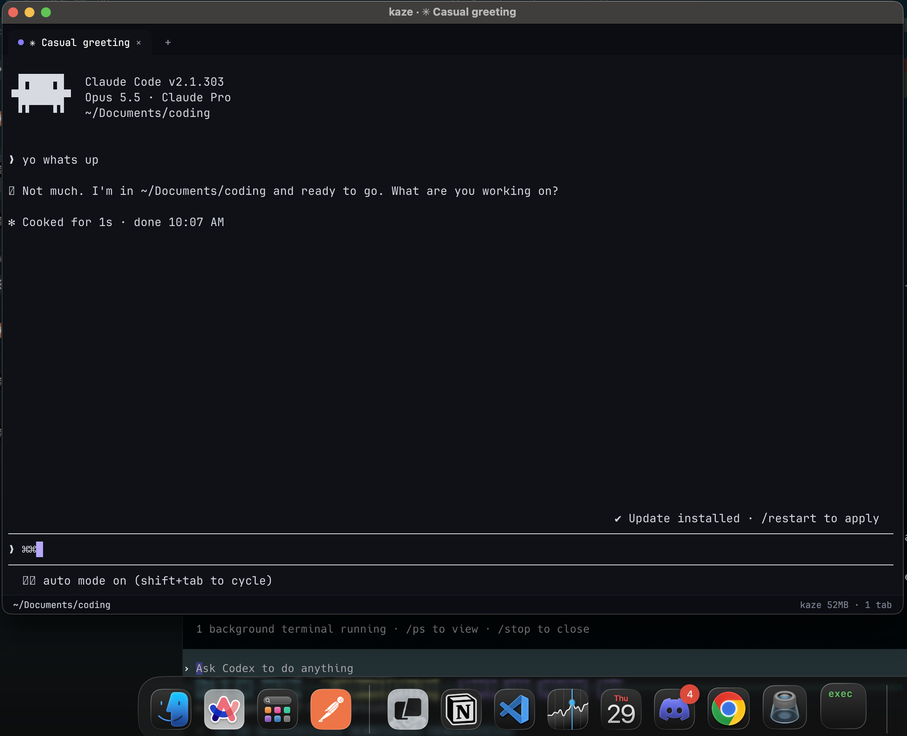

Keep your sessions close.
Tabs for parallel work, with your current folder and git branch in the status bar. Move between tasks without losing your place.

kazeterminalBuilt for the hours spent turning ideas into working code. Kaze keeps your tabs, Claude sessions, and attention in one quiet place.
Build Kaze ↗Explore the source ↗
Tabs for parallel work, with your current folder and git branch in the status bar. Move between tasks without losing your place.
Claude Code hooks mark the tab when a session needs input or finishes a turn. A soft chime can bring you back at the right moment.
Dirty tracking, cached glyphs, and no redraws while idle. The renderer spends its time on the output you’re actually seeing.
Optional five-hour, weekly, and context usage in the status bar. Keep the numbers nearby while your work stays front and center.
Kaze is a personal terminal, built in the open. Windows is used daily. The Mac version is running, with color and symbol fixes still in progress.
Follow the open issues ↗You’ll need Go 1.27 or newer.
On macOS, install the Xcode Command Line Tools.
git clone https://github.com/patrick-gogo/kaze-terminal.git
cd kaze-terminal./tools/package-macos.sh
open dist/Kaze.appgo build -ldflags "-H=windowsgui" -o kaze.exe ./cmd/kaze
.\kaze.exe